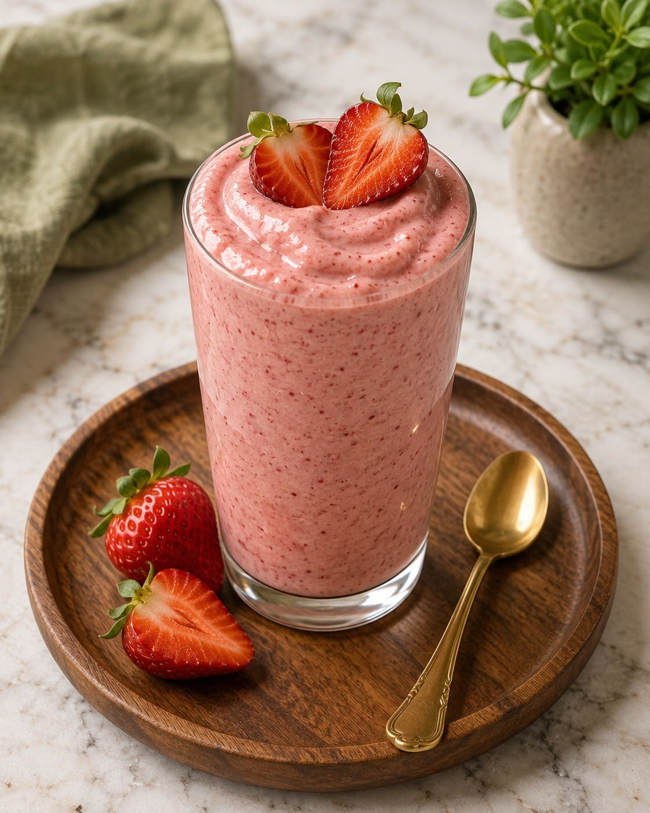

🍓 Vitamina de Morango

Uma bebida cremosa e fácil de preparar para começar o dia com energia.
Ver ingredientes e modo de fazer
Ingredientes
- 1 xícara de morangos
- 1 copo de leite
- 1 banana
- 1 colher de açúcar
Modo de fazer
- Lave bem os morangos.
- Corte os morangos e a banana em pedaços.
- Coloque as frutas no liquidificador.
- Adicione o leite e o açúcar.
- Bata tudo até ficar cremoso.
- Sirva em um copo.